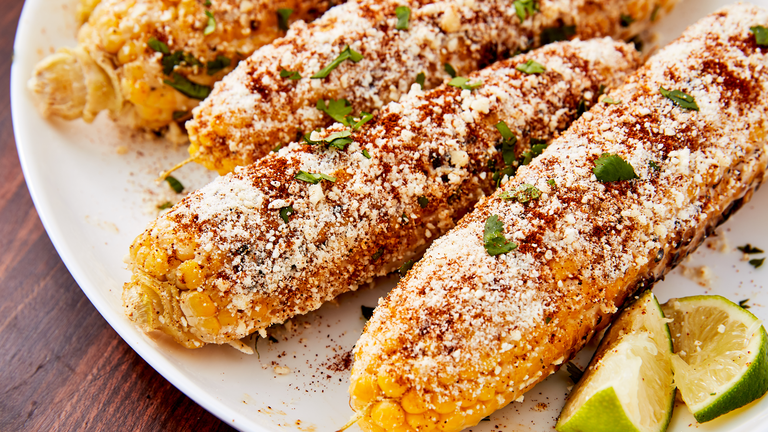

Home

Ingredients
- 4 ears of corn
- 1/4 cup mayonnaise
- 1/4 cup sour cream
- 1/2 cup crumbled cotija cheese
- 1/2 teaspoon chili powder
- 1/4 teaspoon paprika
- 1/4 teaspoon garlic powder
- 1/4 teaspoon salt
- 1/4 teaspoon black pepper
- 1 tablespoon fresh lime juice
- Chopped fresh cilantro, for garnish
Instructions
- Preheat a grill or stovetop grill pan over medium-high heat.
- Remove the husks and silk from the corn.
- Grill the corn, turning occasionally, until it becomes charred and tender, for about 10-12 minutes.
- In a small bowl, combine mayonnaise, sour cream, cotija cheese, chili powder, paprika, garlic powder, salt, black pepper, and lime juice.
- Brush the grilled corn with the mayonnaise mixture, or roll the corn in the mixture to coat it evenly.
- Garnish with chopped cilantro.
- Serve the Mexican Elote immediately, optionally sprinkled with additional cotija cheese and chili powder if desired.